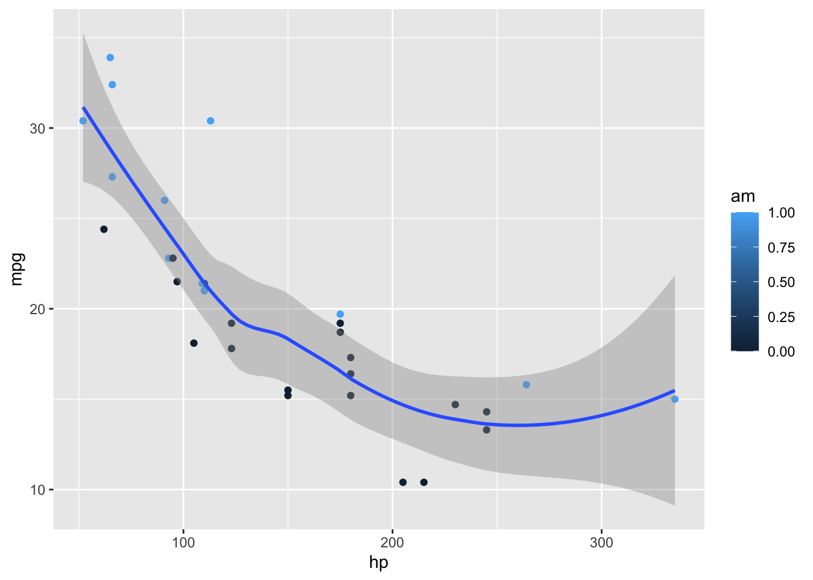

2 + 2[1] 44 * (3 + 5) # La somma entro parentesi viene eseguita per prima[1] 32pi / 4 # Pi greco quarti[1] 0.7853982Unità A: calcolo scientifico ed algebra lineare
Anzitutto, R può essere usato come se fosse una calcolatrice scientifica:
2 + 2[1] 44 * (3 + 5) # La somma entro parentesi viene eseguita per prima[1] 32pi / 4 # Pi greco quarti[1] 0.7853982Per calcolare la potenza \(a^b\) si usa:
2^5 # Sintassi alternativa: 2**5[1] 32Le quantità \(\sqrt{2}\) e \(\sin(\pi/4)\) si ottengono invece con i comandi:
sqrt(2)[1] 1.414214sin(pi / 4)[1] 0.7071068Nota. Tutto ciò che viene scritto dopo un cancelletto (#) è considerato un commento.
È possibile salvare un valore assegnandolo ad un oggetto tramite il simbolo <-.
# Assegna il valore 5 all'oggetto x
x <- sqrt(5) # Sintassi alternativa (sconsigliata): x = sqrt(5)Il valore contenuto in x può essere successivamente richiamato, modificato e salvato in un nuovo oggetto, chiamato ad esempio y.
y <- x + pi # ovvero pi greco + radice quadrata di 5
y[1] 5.377661Per rimuovere un oggetto dalla memoria, si usa il comando rm, ovvero remove.
rm(x) # x non è più presente nel "workspace"Nota. R è case sensitive, pertanto l’oggetto x è diverso dall’oggetto X.
È buona norma mantenere pulito il workspace, ovvero l’ambiente di lavoro.
Se un oggetto non è più necessario, è possibile eliminarlo tramite il comando rm.
È possibile visualizzare la lista di oggetti salvati in memoria tramite il comando seguente:
ls() # Nel workspace è presente l'oggetto y[1] "y"Pertanto, per eliminare tutti gli oggetti salvati, si può usare
rm(list = ls())Supponiamo che x sia un numero reale.
Ciò che seguono sono una lista di funzioni disponibili in R:
x <- 1/2 # Esempio di numero reale
exp(x) # Esponenziale e logaritmo naturale
log(x)
abs(x) # Valore assoluto
sign(x) # Funzione segno
sin(x) # Funzioni trigonometriche (seno, coseno, tangente)
cos(x)
tan(x)
asin(x) # Funzioni trigonometriche inverse
acos(x)
atan(x)Nota. Le funzioni di R si possono combinare tra loro, ad esempio log(abs(x)).
Supponiamo che x e y siano due numeri reali. Inoltre, siano n e k due numeri naturali.
Si noti l’uso del ; che può essere usato per separare due comandi nella stessa riga.
x <- 1 / 2; y <- 1 / 3 # Numeri reali
n <- 5; k <- 2 # Numeri naturali
factorial(n) # n!
choose(n, k) # Coefficiente binomiale
round(x, digits = 2) # Arrotonda x usando 2 cifre decimali
floor(x) # Arrotonda x all'intero più vicino, per difetto
ceiling(x) # Arrotonda x all'intero più vicino, per eccessoLa funzione gamma \(\Gamma(x) = \int_0^\infty s^{x-1} e^{-s} d s\) si calcola in R come segue:
gamma(x) # Funzione gammaLa funzione beta \(\mathcal{B}(x,y) = \int_0^1 s^{x-1}(1-s)^{y-1}ds\) si calcola in R come segue:
beta(x, y) # Funzione betaIn R è possibile disegnare una qualsiasi funzione tramite il comando curve.
Se ad esempio si considera la funzione \[f(x) = \frac{\sin(x)}{x},\] allora possiamo disegnare \(f(x)\) nell’intervallo \((0,15)\) come segue:
curve(sin(x) / x, from = 0, to = 15)
La documentazione di R è la principale fonte di informazioni.
A cosa serve una funzione? Qual è la definizione dei suoi argomenti? La risposta va sempre cercata nella documentazione ufficiale e non in queste slide.
Il comando ? funzione apre una finestra in cui vengono descritta nel dettaglio una funzione. Esempio:
? log # Documentazione della funzione logNota riguardante l’esame. Durante la prova d’esame è legittimo (anzi, è caldamente consigliato) consultare la documentazione.
Numeri molto grandi, come \(10^{15}\), e molto piccoli, come \(10^{-15}\), in R vengono rappresentati come segue:
10^15[1] 1e+1510^(-15)[1] 1e-15Per questioni di approssimazione numerica, quando un numero è troppo grande R riporta Inf, ovvero infinito. Per esempio:
10^1000 # Numero molto grande, anche se finito[1] InfIl simbolo NaN significa invece Not a Number e si ottiene quando qualche funzione matematica non è stata usata nel modo corretto. Ad esempio:
log(-1) # Questo comando genera inoltre un avvisoWarning in log(-1): NaNs produced[1] NaNÈ ben noto che \(\sin(\pi) = 0\). Tuttavia, in R si ottiene un numero molto vicino a \(0\), ma strettamente positivo. Infatti:
sin(pi)[1] 1.224647e-16R è uno strumento di calcolo numerico e pertanto sono sempre presenti errori di approssimazione numerica.
Fortunatamente, nella maggior parte dei casi pratici la differenza tra \(0\) e \(10^{-16}\) è del tutto irrilevante.
In altre situazioni, errori di approssimazione numerica possono portare a conclusioni fuorvianti. Occorre quindi fare attenzione e valutare caso per caso.
Ad ogni modo, l’approssimazione numerica potrebbe anche migliorare. Ad esempio:
cos(pi)[1] -1In R è spesso necessario verificare se una o più condizioni sono verificate o meno.
x <- 5
x < 0 # Il valore di x è minore di 0?[1] FALSEa <- (x == -3) # Il valore di x è uguale a -3?
a[1] FALSEIl valore di a è un indicatore binario o booleano, ovvero può essere vero (TRUE) oppure falso (FALSE).
Altre funzioni logiche disponibili (assumendo che y sia un numero e b un booleano) sono:
a <- TRUE; b <- FALSE; x <- 5; y <- 7
x >= y # x è maggiore o uguale a y? (Si usa "<=" per minore uguale)[1] FALSEx != y # x è diverso da y?[1] TRUEa & b # a AND b. I valori booleani a e b sono entrambi veri?[1] FALSEa | b # a OR b. Almeno uno tra a ed b è vero?[1] TRUEUn vettore in R viene definito tramite la funzione c(), come nel seguente esempio:
x <- c(4, 2, 2, 8, 10)
x[1] 4 2 2 8 10Nota. Con il termine generico “vettore” in R non si fa riferimento alla nozione dell’algebra lineare ma semplicemente ad una stringa di valori ordinati.
Infatti il seguente oggetto è un vettore in R, nonostante l’oggetto x sia composto sia numeri che da lettere
x <- c("A", "B", 2, 8, 10)
x[1] "A" "B" "2" "8" "10"Talvolta è comodo creare dei vettori i cui elementi sono dei numeri consecutivi
x <- 5:10 # Equivalente a: x <- c(5, 6, 7, 8, 9, 10)
x[1] 5 6 7 8 9 10Per creare una successione di numeri reali si usa il comando seq:
x <- seq(from = 0, to = 1, by = 0.1)
x [1] 0.0 0.1 0.2 0.3 0.4 0.5 0.6 0.7 0.8 0.9 1.0Per creare un vettore di valori ripetuti si usa il comando rep:
x <- rep(10, 7) # Vettore in cui il numero 10 è ripetuto 7 volte
x[1] 10 10 10 10 10 10 10La maggior parte delle funzioni matematiche di R sono vettorizzate. In altri termini, le funzioni agiscono su tutti gli elementi di un vettore.
exp(1:6) + (1:6) / 2 + 1 # Esempio 1[1] 4.218282 9.389056 22.585537 57.598150 151.913159 407.428793x <- c(10, 10^2, 10^3, 10^4, 10^5, 10^6) # Esempio 2
log(x, base = 10)[1] 1 2 3 4 5 61:8 > 4 # Esempio 3[1] FALSE FALSE FALSE FALSE TRUE TRUE TRUE TRUEAltre funzioni invece sono utili proprio nel caso in cui l’argomento sia un vettore:
x <- c(2, 3, 1, 3, 10, 5)
length(x) # Lunghezza del vettore[1] 6sum(x) # Somma degli elementi del vettore[1] 24cumsum(x) # Somme cumulate[1] 2 5 6 9 19 24Ulteriori semplici operazioni in cui l’argomento è un vettore sono elencate nel seguito:
x <- c(2, 3, 1, 3, 10, 5)
prod(x) # Prodotto degli elementi del vettore[1] 900cumprod(x) # Prodotti cumulati[1] 2 6 6 18 180 900sort(x, decreasing = FALSE) # Vettore ordinato in ordine crescente[1] 1 2 3 3 5 10min(x) # Valore minimo[1] 1which.min(x) # Posizione del valore corrispondente al minimo[1] 3Infine, il funzionamento delle seguenti funzioni dovrebbero essere intuibile da quanto visto finora:
max(x) # Valore massimo
which.max(x) # Posizione del valore corrispondente al massimo
range(x) # Equivalente a: c(min(x), max(x))È possibile selezionare gli elementi di un vettore usando le parentesi quadrate, come nei seguenti esempi:
# Concatenazione di vettori
x <- c(rep(pi, 2), sqrt(2), c(10, 7))
x[3] # Estrae il terzo elemento dal vettore x, ovvero sqrt(2)[1] 1.414214x[c(1, 3, 5)] # Estrae il primo, il terzo ed il quinto elemento[1] 3.141593 1.414214 7.000000x[-c(1, 3, 5)] # Elimina il primo, il terzo ed il quinto elemento[1] 3.141593 10.000000x[x > 3.5] # Estrae gli elementi maggiori di 3.5[1] 10 7L’ultimo comando suggerisce che gli elementi di un vettore possono essere selezionati tramite una condizione relativa al vettore stesso.
Cosa succede quando vengono sommati due vettori di dimensioni diverse?
La maggior parte dei linguaggi di programmazione restituisce un errore. R invece esegue ugualmente l’operazione “allungando” il vettore più corto.
In questo primo esempio, quantomeno R restituisce un warning.
# Concatenazione di vettori
x <- 1:5
y <- 1:6
x + y # Equivalente a: c(x, x[1]) + yWarning in x + y: longer object length is not a multiple of shorter object
length[1] 2 4 6 8 10 7In questo secondo esempio, invece, R non restituisce alcun avviso, rendendo la cosa particolarmente pericolosa
x <- 1:3
y <- 1:6
x + y # Equivalente a: c(x, x) + y[1] 2 4 6 5 7 9Una matrice \({\bf A}\) è una collezione di elementi \((a)_{ij}\) per \(i=1,\dots,n\) e \(j=1,\dots,m\).
Per esempio, la matrice quadrata di dimensione \(2 \times 2\)
\[{\bf A} = \begin{pmatrix}
5 & 2\\
1 & 4 \\
\end{pmatrix},\] si può definire in R tramite il comando matrix come segue:
A <- matrix(c(5, 1, 2, 4), nrow = 2, ncol = 2)
A [,1] [,2]
[1,] 5 2
[2,] 1 4È inoltre possibile elencare gli elementi riga per riga
# Definizione equivalente
A <- matrix(c(5, 2, 1, 4), nrow = 2, ncol = 2, byrow = TRUE)Una matrice con una sola colonna è un vettore colonna:
x_col <- matrix(c(1, 10, 3, 5), ncol = 1)
x_col [,1]
[1,] 1
[2,] 10
[3,] 3
[4,] 5Una matrice con una sola colonna è un vettore riga:
x_row <- matrix(c(1, 10, 3, 5), nrow = 1)
x_row [,1] [,2] [,3] [,4]
[1,] 1 10 3 5Nella maggior parte dei casi, il {vettore riga x_row è intercambiabile col vettore x.
x_row <- matrix(c(1, 10, 3, 5), nrow = 1)
x <- c(1, 10, 3, 5) # Simile, ma non identico, a x_rowAd esempio, le funzioni sum(x_row) e sum(x) forniscono lo stesso risultato.
Ci sono tuttavia alcune lievi distinzioni. Ad esempio:
dim(x_row)[1] 1 4dim(x)NULLIl simbolo NULL significa non definito, perché non esiste la nozione di dimensione per un generico vettore R.
È possibile selezionare gli elementi di una matrice in maniera analoga a quanto fatto con i vettori.
A[1, 2] # Estrazione di elemento in posizione (1,2)[1] 2A[, 2] # Estrazione seconda colonna[1] 2 4A[1, ] # Estrazione prima riga[1] 5 2Alcuni per manipolare le matrici sono i seguenti
```{=tex}
\begin{frame}[fragile]{Operazioni sulle matrici II}
\bi
\item Come per i vettori, le operazioni elementari (somma, prodotto, \texttt{log}, \texttt{exp}, etc.) vengono eseguite \empr{elemento per elemento}.
\begin{minted}[frame=lines,baselinestretch=1.1,fontsize=\footnotesize]{R}
exp(A)
# [,1] [,2]
# [1,] 148.413159 7.389056
# [2,] 2.718282 54.598150
\end{minted}
\item Siano ${\bf A}$ e ${\bf B}$ due matrici aventi lo stesso numero di colonne e definiamo
$$
{\bf C} = \begin{pmatrix}{\bf A} \\ {\bf B} \end{pmatrix}.
$$
\begin{minted}[frame=lines,baselinestretch=1.1,fontsize=\footnotesize]{R}
B <- A # Creo una matrice B identica ad A, per semplicità
C <- rbind(A, B)
\end{minted}
\item In maniera analoga, siano ${\bf A}$ e ${\bf B}$ due matrici aventi lo stesso numero di righe e definiamo ${\bf C} = \begin{pmatrix}{\bf A} & {\bf B} \end{pmatrix}$.
\begin{minted}[frame=lines,baselinestretch=1.1,fontsize=\footnotesize]{R}
C <- cbind(A, B)
\end{minted}
\ei
\end{frame}# Define a server for the Shiny app
function(input, output) {
# Fill in the spot we created for a plot
output$phonePlot <- renderPlot({
# Render a barplot
})
}# Define a server for the Shiny app
function(input, output) {
# Fill in the spot we created for a plot
output$phonePlot <- renderPlot({
# Render a barplot
barplot(WorldPhones[,input$region]*1000,
main=input$region,
ylab="Number of Telephones",
xlab="Year")
})
}#| fig-width: 10
#| fig-height: 4.5
library(ggplot2)
ggplot(mtcars, aes(hp, mpg, color = am)) +
geom_point() + geom_smooth(formula = y ~ x, method = "loess")
MathJax rendering of equations to HTML
\begin{gather*}
a_1=b_1+c_1\\
a_2=b_2+c_2-d_2+e_2
\end{gather*}
\begin{align}
a_{11}& =b_{11}&
a_{12}& =b_{12}\\
a_{21}& =b_{21}&
a_{22}& =b_{22}+c_{22}
\end{align}Arrange content into columns of varying widths:
The data was extracted from the 1974 Motor Trend US magazine, and comprises fuel consumption and 10 aspects of automobile design and performance for 32 automobiles.
knitr::kable(head(mtcars)[,c("mpg", "cyl", "disp", "hp", "wt")])| mpg | cyl | disp | hp | wt | |
|---|---|---|---|---|---|
| Mazda RX4 | 21.0 | 6 | 160 | 110 | 2.620 |
| Mazda RX4 Wag | 21.0 | 6 | 160 | 110 | 2.875 |
| Datsun 710 | 22.8 | 4 | 108 | 93 | 2.320 |
| Hornet 4 Drive | 21.4 | 6 | 258 | 110 | 3.215 |
| Hornet Sportabout | 18.7 | 8 | 360 | 175 | 3.440 |
| Valiant | 18.1 | 6 | 225 | 105 | 3.460 |
Lists can optionally be displayed incrementally:
Insert pauses to make other types of content display incrementally.
Incremental text display and animation with fragments:
Fade in
Slide up while fading in
Slide left while fading in
Fade in then semi out
Strike
Highlight red
Set the background attribute on a slide to change the background color (all CSS color formats are supported).
Different background transitions are available via the background-transition option.
You can also use the following as a slide background:
An image: background-image
A video: background-video
An iframe: background-iframe
Automatically animate matching elements across slides with Auto-Animate.
Automatically animate matching elements across slides with Auto-Animate.
The next few slides will transition using the slide transition
| Transition | Description |
|---|---|
none |
No transition (default, switch instantly) |
fade |
Cross fade |
slide |
Slide horizontally |
convex |
Slide at a convex angle |
concave |
Slide at a concave angle |
zoom |
Scale the incoming slide so it grows in from the center of the screen. |
library(ggplot2)
ggplot(mtcars, aes(hp, mpg, color = am)) +
geom_point() + geom_smooth(formula = y ~ x, method = "loess")
knitr::kable(mtcars)| mpg | cyl | disp | hp | drat | wt | qsec | vs | am | gear | carb | |
|---|---|---|---|---|---|---|---|---|---|---|---|
| Mazda RX4 | 21.0 | 6 | 160.0 | 110 | 3.90 | 2.620 | 16.46 | 0 | 1 | 4 | 4 |
| Mazda RX4 Wag | 21.0 | 6 | 160.0 | 110 | 3.90 | 2.875 | 17.02 | 0 | 1 | 4 | 4 |
| Datsun 710 | 22.8 | 4 | 108.0 | 93 | 3.85 | 2.320 | 18.61 | 1 | 1 | 4 | 1 |
| Hornet 4 Drive | 21.4 | 6 | 258.0 | 110 | 3.08 | 3.215 | 19.44 | 1 | 0 | 3 | 1 |
| Hornet Sportabout | 18.7 | 8 | 360.0 | 175 | 3.15 | 3.440 | 17.02 | 0 | 0 | 3 | 2 |
| Valiant | 18.1 | 6 | 225.0 | 105 | 2.76 | 3.460 | 20.22 | 1 | 0 | 3 | 1 |
| Duster 360 | 14.3 | 8 | 360.0 | 245 | 3.21 | 3.570 | 15.84 | 0 | 0 | 3 | 4 |
| Merc 240D | 24.4 | 4 | 146.7 | 62 | 3.69 | 3.190 | 20.00 | 1 | 0 | 4 | 2 |
| Merc 230 | 22.8 | 4 | 140.8 | 95 | 3.92 | 3.150 | 22.90 | 1 | 0 | 4 | 2 |
| Merc 280 | 19.2 | 6 | 167.6 | 123 | 3.92 | 3.440 | 18.30 | 1 | 0 | 4 | 4 |
| Merc 280C | 17.8 | 6 | 167.6 | 123 | 3.92 | 3.440 | 18.90 | 1 | 0 | 4 | 4 |
| Merc 450SE | 16.4 | 8 | 275.8 | 180 | 3.07 | 4.070 | 17.40 | 0 | 0 | 3 | 3 |
| Merc 450SL | 17.3 | 8 | 275.8 | 180 | 3.07 | 3.730 | 17.60 | 0 | 0 | 3 | 3 |
| Merc 450SLC | 15.2 | 8 | 275.8 | 180 | 3.07 | 3.780 | 18.00 | 0 | 0 | 3 | 3 |
| Cadillac Fleetwood | 10.4 | 8 | 472.0 | 205 | 2.93 | 5.250 | 17.98 | 0 | 0 | 3 | 4 |
| Lincoln Continental | 10.4 | 8 | 460.0 | 215 | 3.00 | 5.424 | 17.82 | 0 | 0 | 3 | 4 |
| Chrysler Imperial | 14.7 | 8 | 440.0 | 230 | 3.23 | 5.345 | 17.42 | 0 | 0 | 3 | 4 |
| Fiat 128 | 32.4 | 4 | 78.7 | 66 | 4.08 | 2.200 | 19.47 | 1 | 1 | 4 | 1 |
| Honda Civic | 30.4 | 4 | 75.7 | 52 | 4.93 | 1.615 | 18.52 | 1 | 1 | 4 | 2 |
| Toyota Corolla | 33.9 | 4 | 71.1 | 65 | 4.22 | 1.835 | 19.90 | 1 | 1 | 4 | 1 |
| Toyota Corona | 21.5 | 4 | 120.1 | 97 | 3.70 | 2.465 | 20.01 | 1 | 0 | 3 | 1 |
| Dodge Challenger | 15.5 | 8 | 318.0 | 150 | 2.76 | 3.520 | 16.87 | 0 | 0 | 3 | 2 |
| AMC Javelin | 15.2 | 8 | 304.0 | 150 | 3.15 | 3.435 | 17.30 | 0 | 0 | 3 | 2 |
| Camaro Z28 | 13.3 | 8 | 350.0 | 245 | 3.73 | 3.840 | 15.41 | 0 | 0 | 3 | 4 |
| Pontiac Firebird | 19.2 | 8 | 400.0 | 175 | 3.08 | 3.845 | 17.05 | 0 | 0 | 3 | 2 |
| Fiat X1-9 | 27.3 | 4 | 79.0 | 66 | 4.08 | 1.935 | 18.90 | 1 | 1 | 4 | 1 |
| Porsche 914-2 | 26.0 | 4 | 120.3 | 91 | 4.43 | 2.140 | 16.70 | 0 | 1 | 5 | 2 |
| Lotus Europa | 30.4 | 4 | 95.1 | 113 | 3.77 | 1.513 | 16.90 | 1 | 1 | 5 | 2 |
| Ford Pantera L | 15.8 | 8 | 351.0 | 264 | 4.22 | 3.170 | 14.50 | 0 | 1 | 5 | 4 |
| Ferrari Dino | 19.7 | 6 | 145.0 | 175 | 3.62 | 2.770 | 15.50 | 0 | 1 | 5 | 6 |
| Maserati Bora | 15.0 | 8 | 301.0 | 335 | 3.54 | 3.570 | 14.60 | 0 | 1 | 5 | 8 |
| Volvo 142E | 21.4 | 4 | 121.0 | 109 | 4.11 | 2.780 | 18.60 | 1 | 1 | 4 | 2 |
Include Jupyter widgets and htmlwidgets in your presentations
Navigate to hyperlinks without disrupting the flow of your presentation.
Use the preview-links option to open links in an iframe on top of your slides. Try clicking the link below for a demonstration:
10 Built-in Themes (or create your own)


Quickly jump to other parts of your presentation

Toggle the slide menu with the menu button (bottom left of slide) to go to other slides and access presentation tools.
You can also press m to toggle the menu open and closed.
Free form drawing and slide annotations

Use the chalkboard button at the bottom left of the slide to toggle the chalkboard.

Use the notes canvas button at the bottom left of the slide to toggle drawing on top of the current slide.
You can also press b to toggle the chalkboard or c to toggle the notes canvas.
Press o to toggle overview mode:

Hold down the Alt key (or Ctrl in Linux) and click on any element to zoom towards it—try it now on this slide.
Press s (or use the presentation menu) to open speaker view

Live side-by-side preview for any notebook or text editor including Jupyter and VS Code


RStudio includes an integrated presentation preview pane